Willkommen
Einfache Rezepte für ein gutes Bauchgefühl
Ich teile hier meine liebsten, alltagstauglichen Rezeptideen mit dir – damit du ohne Stress gesund essen kannst. Mit einfachen Zutaten, klaren Nährwerten und ganz viel Herz.
Zu den RezeptenWarum ich meine Rezepte teile
Ich möchte dir zeigen, dass gesunde Ernährung unkompliziert und alltagstauglich sein kann – ohne Druck, ohne Verbote. Einfach leckere Lieblingsrezepte mit wenigen Zutaten und klaren Nährwerten, die dir den Alltag leichter machen.
Rezepte für jeden Tag
Wähle eine Kategorie oder scroll dich durch.
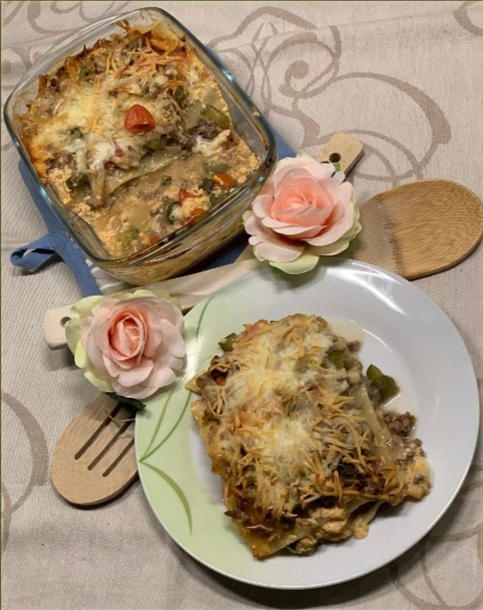
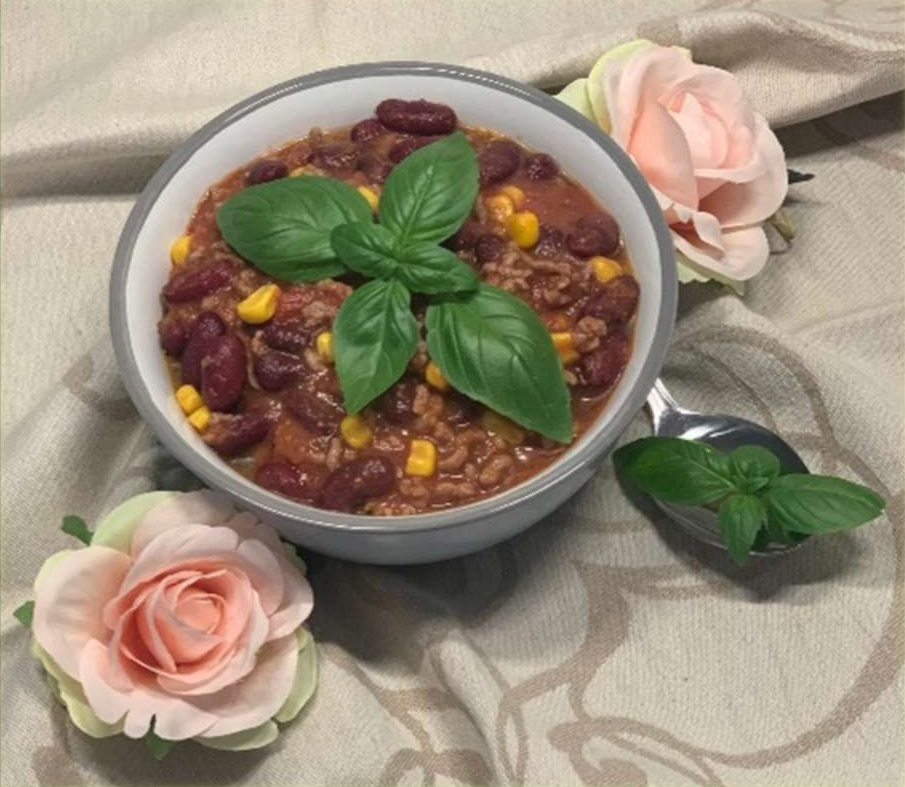
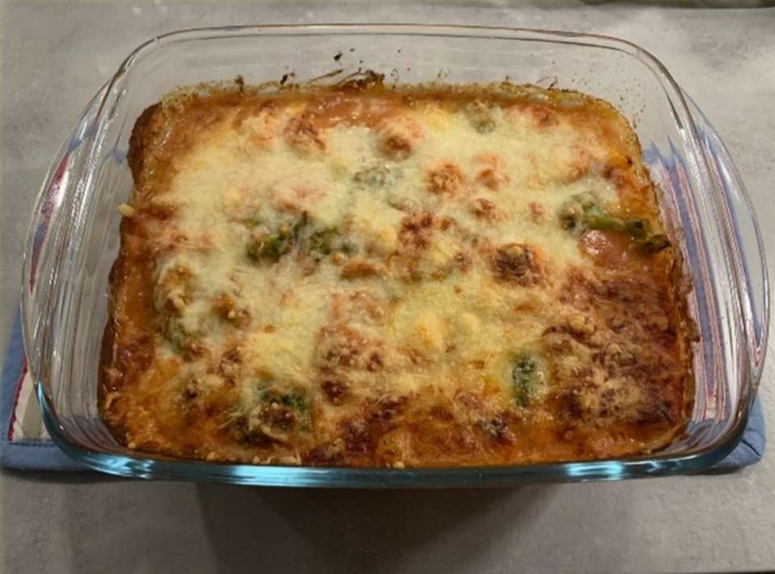
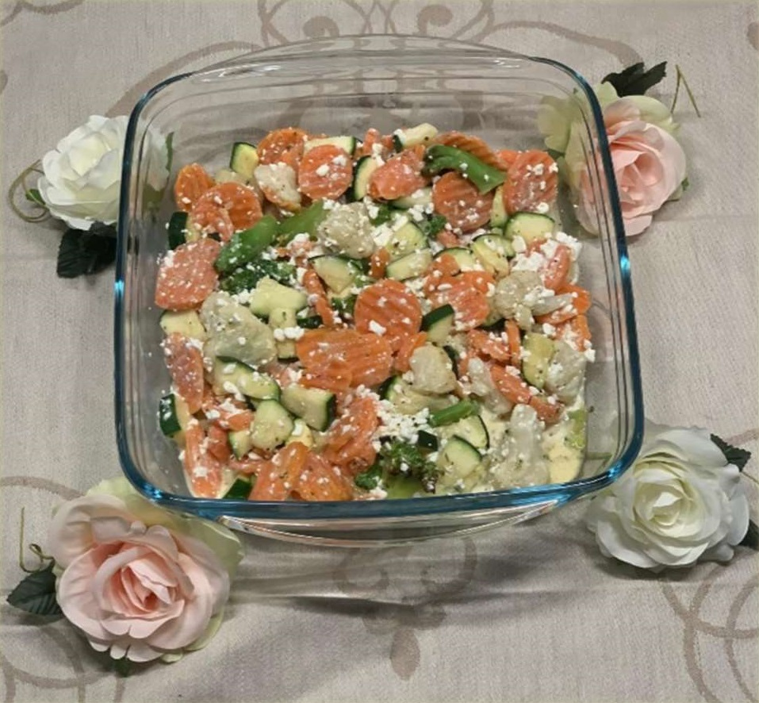
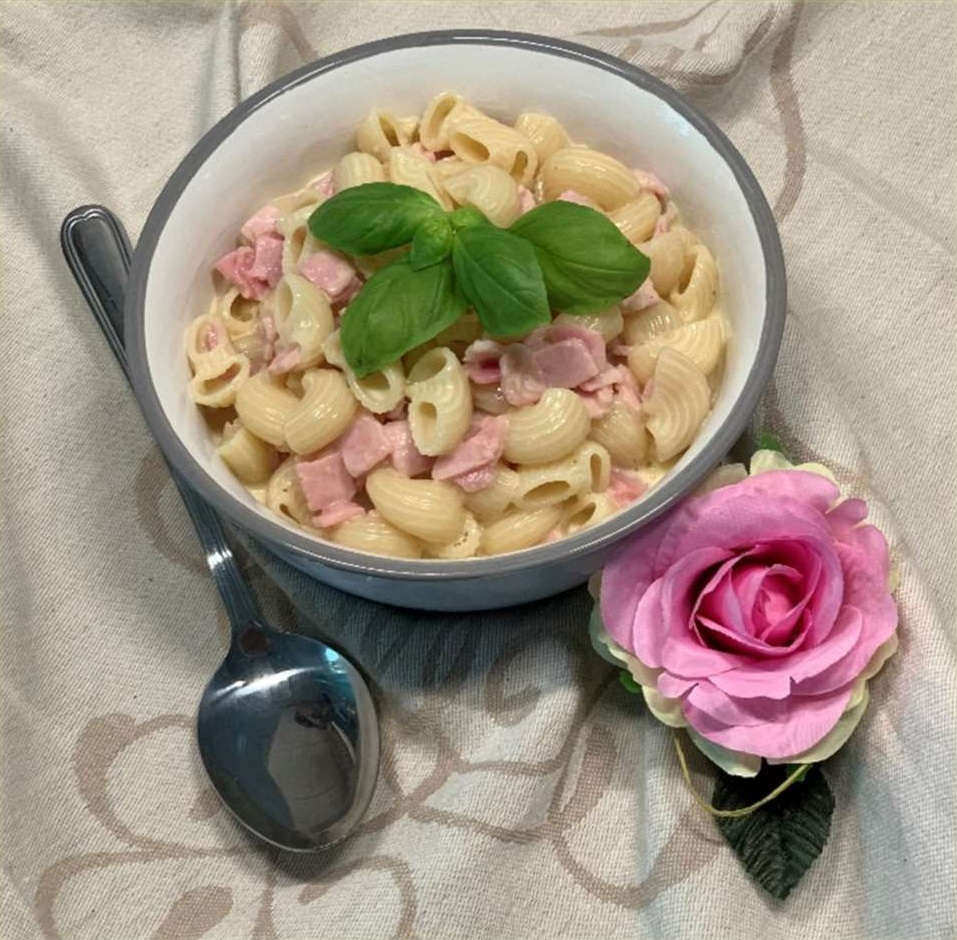
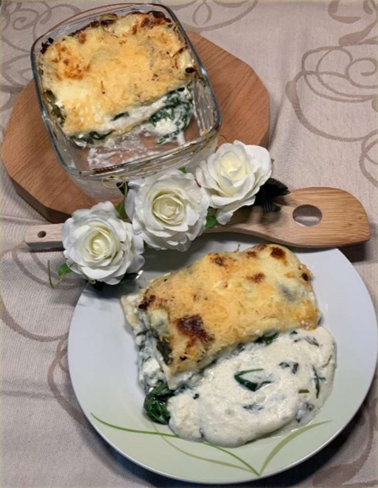
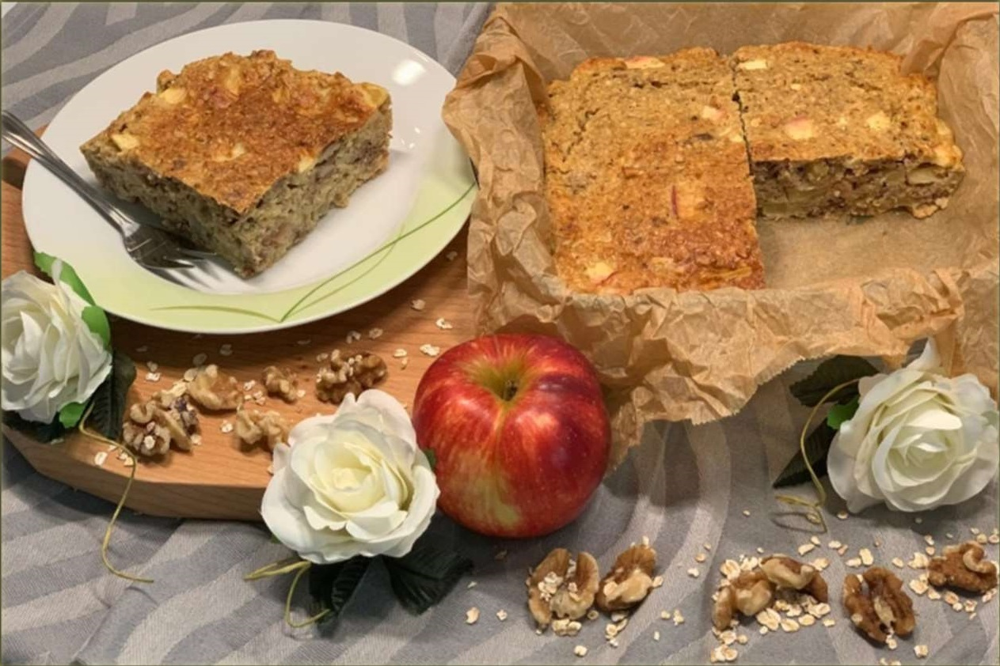
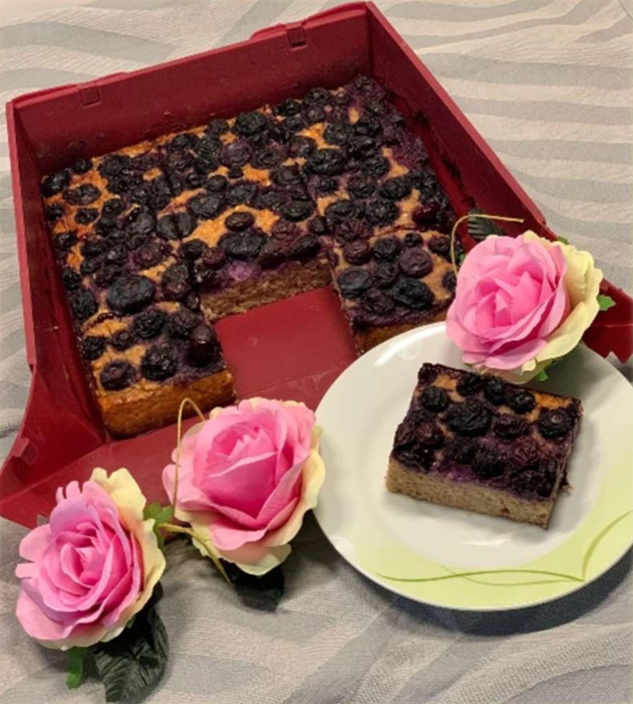
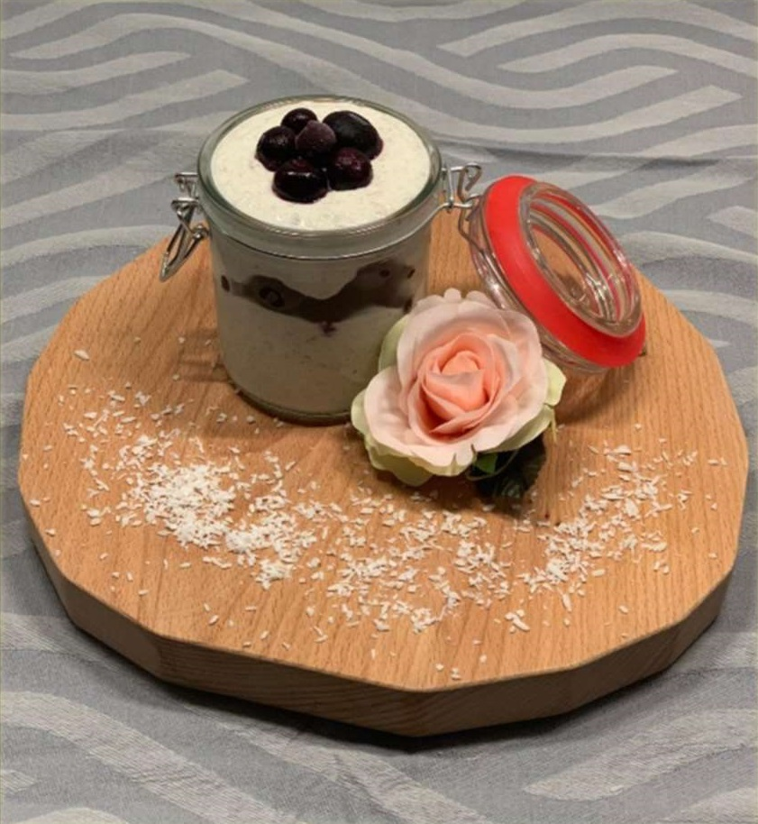
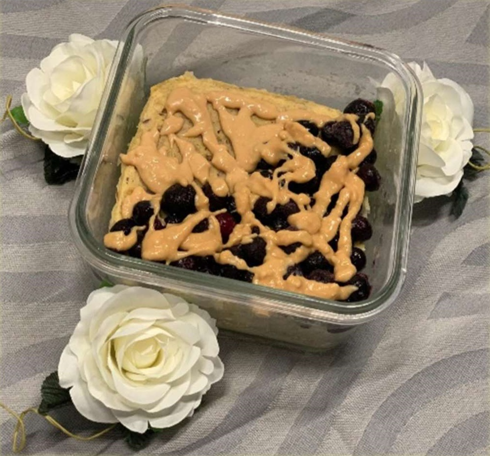
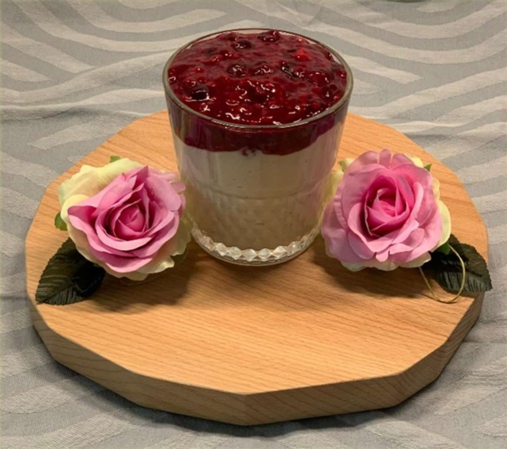
Sanfte Ernährungstipps
Kleine Basics für mehr Balance auf dem Teller.
Ausgewogene Mahlzeiten
1/2 Gemüse, 1/4 Protein, 1/4 gute Kohlenhydrate – plus gesunde Fette.
Must-have-Lebensmittel
Haferflocken, Linsen, TK-Beeren, Nussmus, Kräuter – vielseitig und budgetfreundlich.
Meal-Prep Tipp
Basis (z. B. Quinoa) vorkochen, Gemüse und Dips variieren – spart Zeit & Kalorien.
Kontakt
Fragen oder Feedback? Ich freue mich auf deine Nachricht!
yheinze.coaching.mit.herz@gmail.com